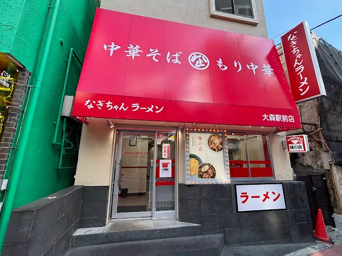
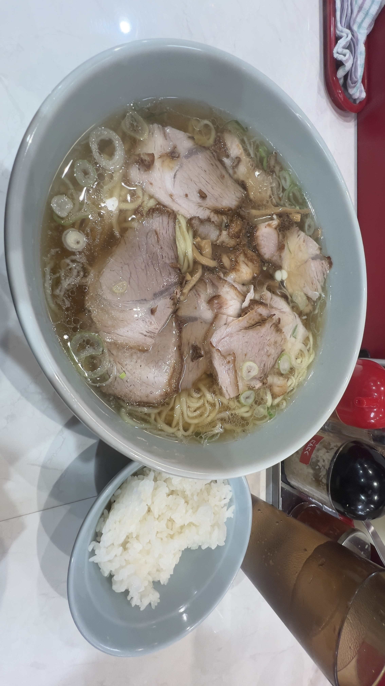

ラーメン屋に行ってきました！
みなさんこんにちは牛めし男です！
今日は寒いので、温かいラーメンを食べに「なぎちゃんラーメン大森店」へ行ってきました！
↑お店の外観
店内は活気があり、寒さも吹き飛ぶような雰囲気でした。
注文したのは 中華そば（大盛り）！
スープは鶏ガラが効いた王道系で麺は昔ながらの縮れ麺、チャーシューも通常で3枚という多さに感動しました
寒い日にぴったりの一杯で、更に無料でライスも付くので心も体も温まり、更に、腹も一杯になりました！
↑今回食べた店 なぎちゃんラーメン大森店